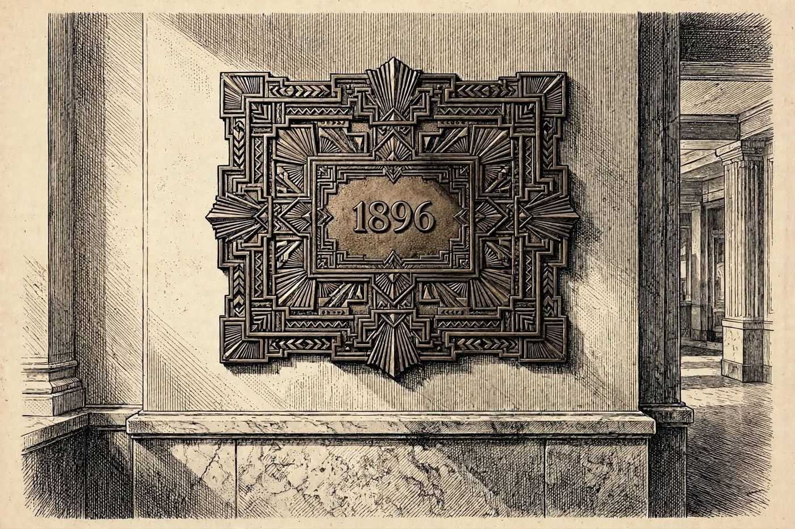

16 de diciembre
Las cartas de Irene
Libro · págs. 68-71
Audio del día
Transcripción
«1-8-9-6… el año de la placa de bronce del vestíbulo. La caja fuerte se ha abierto. Mire lo que hay dentro: un fajo de ocho cartas atadas con una cinta verde descolorida. Todas devueltas al remitente en marzo y abril de 1911. Todas firmadas por una tal I. Sorel y dirigidas a su hermana Anna, en Lausana. La última no está escrita en español corriente: está cifrada. Para leerla hará falta una palabra que usted ya tiene. Una de las que lleva días rondando entre estos papeles.»

Intenta resolverlo primero. Abre solo lo que necesites, en este orden.
1Pista sutil
La clave es una de las palabras-llave que ya has conseguido, la de 6 letras. Escribe la clave repetida debajo del texto cifrado y resta los valores alfabéticos para recuperar el texto original.
2Comprobación parcial
La primera palabra descifrada de la carta (VRFP) al aplicarle la clave VESP da como resultado ANNA.
3Pista fuerte
Escribe VESPER debajo de las letras cifradas, repetida, sin contar espacios ni puntuación. Las cuatro primeras letras cifradas (V, R, F, P) con V, E, S, P dan ANNA.
4Solución oficialSpoiler si no lo has intentado
Clave: VESPER
Mensaje descifrado: ANNA: SI ME PASA ALGO, CUIDA DE MI HIJA, QUE TIENE NUEVE ANOS. IRENE
Para el desenlace de la historia, vuelve al libro: la sección de soluciones está al final.